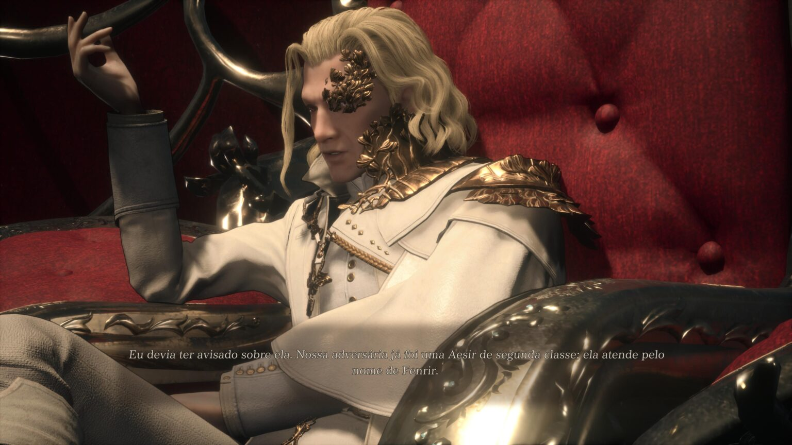

Valkyrie Elysium: vale a pena?
Quem disse que só de God of War vive o Ragnarok? Jogabilidade ficou moderna, mas muitas estruturas vieram de gerações passadas
Valkyrie Elysium é uma experiência moderna de um jogo que se orgulha do seu passado. É fácil compreender isso ao notar as diferenças do título para os antecessores, como o combate em tempo real em vez de turnos, mas também ao ver características das gerações passadas, como uma história muito linear e uma repetitividade excessiva.
O game da Square Enix entrega uma aventura previsível: você sabe o que encontrará até o final dele desde a sua primeira hora nele. Passará por fases isoladas uma das outras, eliminará ondas e ondas de inimigos e esmagará botões com a mecânica de jogabilidade hack and slash. Isso não significa ser um elemento ruim, mas é certamente cansativo.
Uma história sobre o Ragnarok
Quem disse que só de God of War vive o Ragnarok? Valkyrie Elysium retrata justamente o período do fim dos tempos do panteão nórdico e utiliza de figuras conhecidas da mitologia.
O jogador controla a Valquíria, uma guerreira criada pelas mãos de Odin, com a missão de interromper o Ragnarok. Nessa jornada, ela precisa purificar Midgard das almas corrompidas para o Pai de Todos recuperar seu poder e impedir a aniquilação total.
Logo de início, já é bem previsível para a onde o enredo caminhará. Há uma ou outra reviravolta que até faz sentido para o roteiro e se encaixa bem na narrativa, mas o desfecho não é interessante. Embora existam quatro finais diferentes, todos eles são superficialmente apresentados.
Como dito anteriormente, Valkyrie Elysium parece se apegar demais à história construída nos jogos passados e, por isso, não abre mão de certas estruturas. O enredo é o principal prejudicado porque vemos personagens que são 100% bons ou 100% maus. Não há espaço para complexidade ou um melhor desenvolvimento.
E é uma característica peculiar ter utilizado a ambientação nórdica, mas que, aparentemente, serve apenas para usar termos familiares aos jogadores. Seria possível trocar de ambientação e até mesmo de personagens, pois não causaria impacto nenhum na história.
Tirando isso, a experiência é bem bacana com as armas que Amicia tem a seu dispor. Aos poucos, ela vai liberando não só as habilidades da sua skill tree, como também artefatos e materiais químicos para combinar e usar contra ratos e humanos. As soluções podem ser bem criativas, além de poderem gerar momentos épicos em certas batalhas.
Esmaga botão
Enquanto a narrativa fica presa ao passado, a Square Enix modernizou a jogabilidade e isso trouxe uma experiência satisfatória. O jogador tem a disposição o quadrado para ataques leves e triângulo para golpes pesados, mas pode comandar invocações ao segurar o R1 e ativar magias com o R2. A ação em tempo real lembra as mecânicas de Final Fantasy XV com o combate interligado e a junção de combos.
Valkyrie Elysium é definido como um JRPG, mas o gameplay é completamente inspirado no estilo de hack and slash à lá Devil May Cry. É possível conectar magias, invocações e ataques simples para causar a plena destruição nos cenários que fica até um pouco difícil enxergar com tantos efeitos visuais.
Inclusive, o desempenho do jogo sofre em certos momentos que há muitas informações na tela. Existem quedas bruscas de frames quando os inimigos preenchem a tela, mas não é algo recorrente.
Por um lado, o sistema adotado é muito simples e atrai quem não deseja mecânicas tão profundas no sistema de personalização. Por outro, faltaram melhorias que seriam muito bem-vindas. Por exemplo, só é possível deixar no menu rápido até quatro magias, enquanto seu arsenal tem mais de 20 opções com efeitos diferentes. Além disso, as opções da party são limitadíssimas.
Em comparação com outro JRPG, como Tales of Arise que também utiliza de mecânicas similares, o título da Square Enix é mais superficial e menos complexo. Isso pode ser positivo aos que buscam esse estilo, mas negativo para quem gostaria de ver algo mais elaborado.
Repetitividade que incomoda
A simplicidade do gameplay afeta no sentimento de repetitividade. A completar a campanha com os nove capítulos principais e 36 missões secundárias leva em torno de 15 horas. Cada capítulo da história custa 40 minutos e as sidequests são muito rápidas. No entanto, todas elas seguem o mesmo padrão: o jogador entra na fase e precisa seguir o indicador até encontrar um item ou alguém que ajude a impedir o Ragnarok. No meio do caminho, vai eliminando as criaturas que são vulneráveis a magias e atributos específicos.
No modo Normal, é fácil conquistar o Ranking S no término das missões porque a Valquíria evolui de uma forma que os desafios não a acompanham. Então, a fadiga aparece, pois a estrutura permanece a mesma por muito tempo: não há nenhuma evolução empolgante e as novidades ficam restritas às novas magias colecionadas pela exploração.
A jornada do game se torna um ciclo tão grande que a jogabilidade fica muito automática a ponto do jogador não precisar se preocupar com danos ou o uso correto das magias. A história também não cativa e os demais pontos são medianos. A repetitividade faz o jogador perder o interesse pelo o que aparece na tela, porque é a mesma coisa do início ao fim.
Valkyrie Elysium: vale a pena?
O JRPG da Square Enix não se preocupa em surpreender ou trazer novas ideias. A história, jogabilidade, exploração e toda a sua estrutura segue uma mesma lógica do início ao fim. Com um roteiro bem previsível e um gameplay que pode ficar chato pela repetitividade, o game até diverte no contexto geral – ainda mais se considerar que nem leva tanto tempo para fazer praticamente tudo o que há nele.
A sensação deixada por Valkyrie Elysium é que a Square tentou divulgar a franquia para um público mais jovem, mas respeitando demais a saga que, de certa forma, não se encaixa mais. Por isso, a jogabilidade se destoa do restante do conteúdo. Inclusive, vale uma nota aqui sobre o visual do título que é bem aquém de um game lançado para 2022.
Embora tenha suas características positivas, elas são bem superficiais. Havia mais espaço para apresentar de uma outra forma a saga, com intuito de melhor engajamento, mas isso fica, quem sabe, para próximas continuações.
Fonte:MeuPlastation